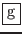
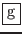

Une clé de fonction peut être :
Tout début de commande multiple (ou passage d'argument) peut être annulé en cours
de saisie par la commande
 -. Ceci est aussi valable lors du passage
d'arguments par l'utilisateur.
-. Ceci est aussi valable lors du passage
d'arguments par l'utilisateur.
Remarque 19..9 :
Il existe un certain nombre de clés de fonctions prédéfinies, mais l'utilisateur peut définir ses propres clés de fonctions, soit parce que la fonctionnalité n'existe pas sous "emacs", soit parce que la séquence de touche à laquelle elle est normalement attribuée est inaccessible sur certaines types de terminaux passifs, par exemple-
pour une recherche, est inaccessible sur les consoles VT).
"emacs" est doté d'un certain nombre de fonctions prédéfinies, qui sont en fait des associations entre des touches de fonctions et des fonctions standards reconnus par l'éditeur de texte, par exemple "scroll-down", "kill-word", "search-forward", etc. Il existe un fichier d'initialisation, où "emacs" va lire les définitions utilisateurs avant toute entrée dans l'éditeur. Ce fichier s'appelle ".emacs" et est situé dans votre répertoire de connexion. Il est basé sur le langage "lisp", langage de programmation utilisé pour l'ensemble des fichiers de configuration d'"emacs". Ce langage était, à l'origine, associé à l'intelligence artificielle et a été le précurseur de la programmation objet.
Exemple 19..2 :
Exemple de fichier ".emacs"
(define-key global-map "\C-xf" 'isearch-forward) (define-key global-map "\C-xl" 'goto-line)
La première ligne associe la séquence
à "recherche avant". La seconde ligne associe la séquence
à "positionnement à une ligne".
Attention :
Si la clé de fonction est déjà affecté par le système à une autre fonction, l'affectation précédente est écrasée par l'affectation utilisateur.